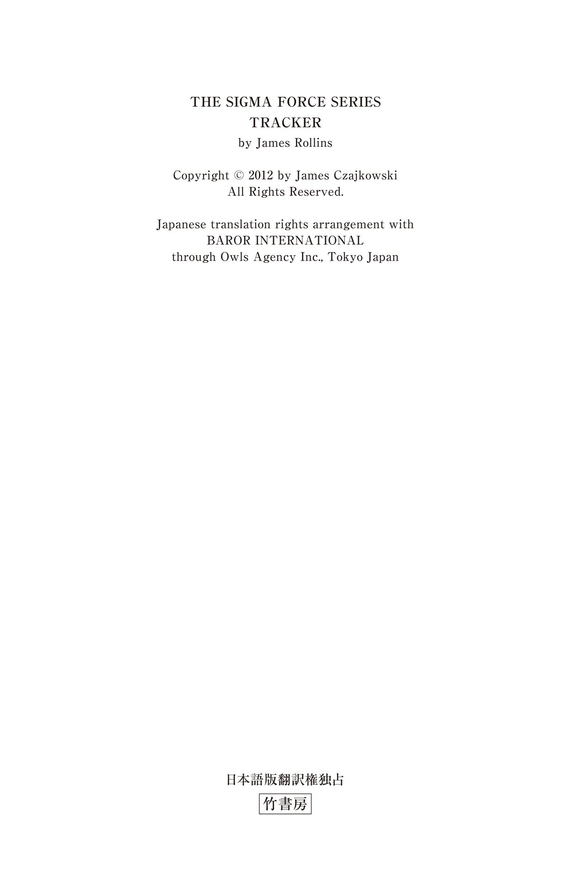
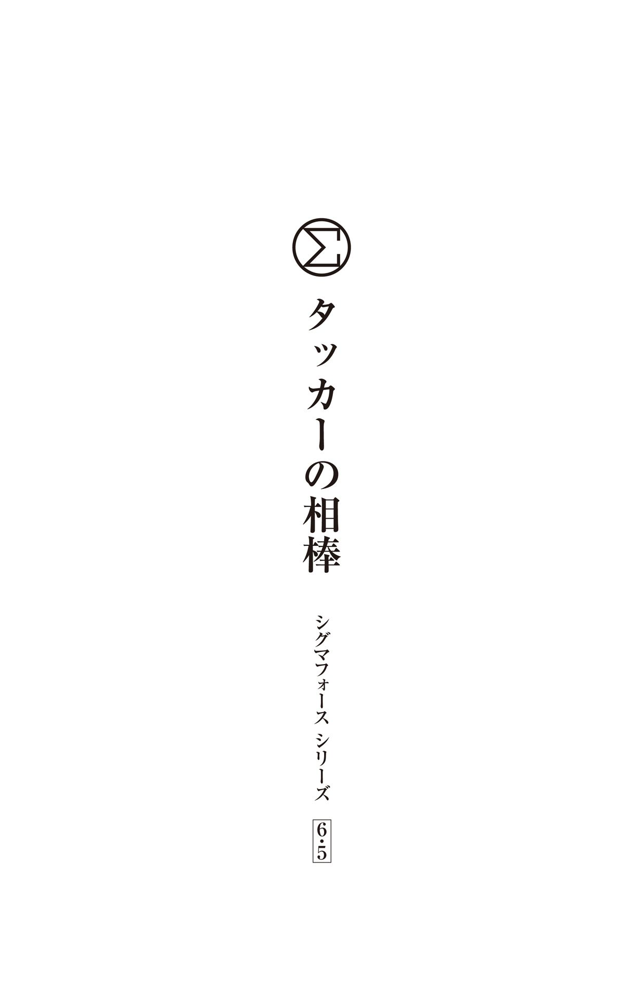

| 〈シグマフォース・シリーズ6.5〉タッカーの相棒 シグマフォースシリーズ | |
| ジェームズ・ロリンズ | |
| (2015) | |
この作品は縦書きでレイアウトされています。
また、ご覧になる機種により、表示の差異が認められることがあります。
一部の漢字が簡略字で表示されていることがあります。


シグマフォース・シリーズ⑦『ギルドの系譜』で、元陸軍レンジャー部隊のタッカー・ウェイン大尉と軍用犬のケインは、シグマフォースと協力して事件の解決に大きく貢献した。タッカーが陸軍を除隊になり、ケインとともに世界を放浪していたことは『ギルドの系譜』でも触れられていたが、一人と一頭はただのんびりと観光を楽しんでいたわけではない。
ザンジバルでグレイたちと出会う約四カ月前、タッカーとケインはハンガリーのブダペストで、ある事件に巻き込まれていた。そこで彼らが命を落としていたら、『ギルドの系譜』におけるグレイたちの任務の成功はなかっただろう。
主な登場人物
タッカー・ウェイン .........元米国陸軍の大尉
ケイン .........軍用犬。タッカーの相棒
アリザ・バータ .........イギリス人の女性
三月四日午後五時三十二分
ハンガリー ブダペスト
彼女は何者かに追われている。
カフェのうすら寒いオープンテラスに座り、ウールのジャケットにくるまったタッカー・ウェインは、中世の趣を残す三位一体広場を一人の女性が足早に横切るのを眺めていた。女性は金髪で二十代前半。肩越しに後ろを振り返る回数が多すぎる。太陽が沈んで気温の下がった広場一帯は、すでに夕闇が迫っているというのに、女性はサングラスをかけている。深紅のスカーフは首だけではなく口元まで覆っていた。寒さに震えているわけではない。あんな薄い生地では、広場に吹きつける寒風を防ぐ役には立たない。それに彼女は歩くのが速すぎる。ほかの人々はブダペスト市内の観光拠点の一つであるブダ城地区の中心で、のんびりと散策を楽しんでいるというのに。
陸軍時代、タッカーはこうした監視を常に怠らないようにする訓練を受けた。通常の光景に紛れた不自然な動きを見逃さないことが大切だ。陸軍レンジャー部隊の大尉だった時、タッカーと相棒は二度にわたるアフガニスタンへの派遣で部隊の「トラッカー」を務めた──捜索・救出作戦や奪還作戦の際に、ターゲットの居場所を追跡する任務だ。アフガニスタンの辺境や村では、ライフルや防弾チョッキや最新のリスク評価が生死を左右するとは限らない。周囲の環境のリズム、人々の日常生活の流れ、不自然な動きなどを見極める力が物を言う。
今のように。
あの女性はこの場に似つかわしくない。明るい色の服装は明らかに周囲から浮いている。膝丈のコートはアイボリーだし、スカーフだけでなく帽子や靴まで赤だ。茶色や黒、灰色といった冬の装いの中にあって、彼女はひときわ目立っている。
〈見失わないでくださいと言わんばかりの服装だな〉
女性が怯 えた様子で広場を横切るのを眺めながら、タッカーは左右の手のひらの間に熱いコーヒーの入ったカップを挟んだ。両手には指先の部分をカットした手袋をはめている。カフェのほかの客たちは小ぢんまりとした店内にいる。夕方の時間帯のため、暖かい店内は混み合っていた。カウンター席に座る客もいれば、窓際の小さなテーブル席に腰掛けている客もいる。冷え切った広場の端にある屋外のテラスにいるのはタッカーだけだ。
あと、自分の相棒も。
「ベルジアン・マリノア」の名で知られる小型のシェパードが、タッカーの足もとに寝そべっていた。鼻の先端をタッカーのブーツのつま先に乗せ、指示を受けたらすぐに動けるように準備している。ケインもタッカーとともにアフガニスタンに二度派遣された。一人と一頭は寝食を共にしながら任務を遂行してきた。
タッカーにとって、ケインは自分の手足のような、いや、体の一部のような存在だ。
軍を除隊になった時、タッカーはケインを無断で連れ出した。
それ以来、タッカーは世界各地を放浪している。一切の連絡を絶ち、生活のためにアルバイトのような仕事をしては、別の街へと移動する。そんな生き方が性に合っていた。アフガニスタンでのあのような経験の後では、タッカーには新しい視野が、新しい展望が必要だった。それにも増して、常に動いていたいという強い衝動にも駆られていた。
アメリカに身寄りがいないため、今の自分には決まった家など必要ない。
自分のいるところが家だ。
タッカーは手を伸ばし、濃いブラックタンの毛をさすった。ケインが鼻先を上に向ける。金色の斑点の交じった濃い茶色の瞳が、タッカーを見つめている。これは人間に飼い慣らされた犬だけに見られる特徴の一つだ──人間が犬のことを観察するのと同じように、犬も人間のことを観察する。
タッカーはケインと視線を合わせると、小さくうなずいた──広場の方角に素早く視線を動かす。自分たちの方へと近づいてくる女性は、テラスの脇を通り過ぎるはずだ。その時のために、ケインにも準備をさせておかなければならない。
タッカーは広場を出入りする人の流れを目で追った。中央にそびえる記念碑の左右を人々が通り過ぎる。バロック様式の正面には人の姿をかたどった大理石の像がいくつもあり、頭頂部に輝く金色の星を目指して登っている。像は十八世紀にペストがブダペストを襲った時、助かった市民たちを表しているとされる。
女性が次第に近づいてくる。タッカーは女性の方に視線を向けている人がいないかを探った。少なからぬ人数がいる。無理もない。思わず振り返って見てしまうような女性だ。スリムでスタイルもよく、艶 のある金髪が背中の中ほどまで垂れている。
ようやくタッカーは広場の反対側にいるハンターの姿をとらえた──正確には、ハンターたち だ。
巨漢の男が一人と、その両側にやや小柄な男が二人、計三人の男が、北側の通りから広場へと入ってきた。全員がトレンチコートを着ている。リーダーらしき大男は黒髪で、身長は一メートル八十センチを優に超えている。かなり筋肉が付いているようだが、顔にあばたが目立つことから推測するに、アナボリックステロイドの常用者だろう。
タッカーはトレンチコートの下のふくらみに目を留めた。武器を隠し持っているに違いない。
女性は三人の男に気づいていない。男たちの方に視線が向いても、不安そうに何かを探し続けている。
つまり、女性は何者かに追われているかもしれないと思っているものの、追っ手が誰なのかを見つけ出す技術も知識も持っていない。けれども、本能的にほかの人を警戒している。
女性が足早にタッカーの前を通り過ぎた。かすかにジャスミンの香りが漂う。
ケインが鼻先を傾け、女性の香りを嗅いだ。
女性は荘厳なマーチャーシュ聖堂の正面入口に向かっている。石造りの見上げるような高さの尖 塔 と、聖母マリアの死を描いた十四世紀のレリーフを備えた教会は、扉がまだ開いており、一日の最後の観光客が建物から出てくるのを待っている。女性は扉に近づき、最後にもう一度振り返ってから、教会の内部へと姿を消した。
タッカーはコーヒーを飲み干し、テーブルにチップを置いてから立ち上がった。ケインのリードを握ってテラスから出ると、ほぼ同時に三人組が目の前を通り過ぎる。ジャケットとコートにくるまって三人の後を追いながら、タッカーは三人の中のいちばん大きな男がハンガリー語で短く命令する声を耳にした。
〈地元のごろつきどもだな〉
タッカーは教会へと移動する三人の後をつけた。一人の男が振り返ったが、タッカーにはその男の目に自分がどう映っているかわかっていた。
二十代後半で身長が平均よりやや高く、サンディブロンドのぼさぼさの髪をした男性が、茶色のセーターを着せた犬を散歩させているとしか見えないはずだ。タッカーは鍛え上げた筋肉をあえて隠すため、肩を落として猫背で歩いていた。服装もこれといった特徴はない──はき古したジーンズ、傷みの目立つオリーブグリーンのコート、目 深 にかぶったウールの帽子。また、タッカーはアイコンタクトを避けるべきではないことも理解していた。じろじろ見ているのと同じように、かえって相手の不審感を募らせることになる。タッカーはさりげなく男に向かってうなずきを返した。
男が前に向き直ると同時に、タッカーは指先で鼻に触れてから、真ん中を歩く大柄な男を指差した。
〈あいつのにおいを覚えろ〉
ケインは千の単語を理解し、百種類の手の動きにも反応するため、タッカーの代わりに様々な任務をこなすことができる。シェパードは男たちとの距離を詰め、かかとの近くまで垂れたトレンチコートの裾に鼻を近づけると、真ん中の男のにおいを嗅いだ。
タッカーは相棒の動きに気づかないふりをして、広場の方を眺めた。
必要なにおいを覚えると、ケインはタッカーのもとへと戻り、次の指示を待った。ぴんと立った耳と高く掲げたしっぽは、ケインが注意を払っている印だ。
三人組は教会の前へと達した。ハンガリー語で追加の指令が与えられると、建物側面の出口を固めるため、小柄な二人が左右に展開する。
タッカーは広場のベンチへ歩み寄ると、ケインの隣にしゃがんだ。リードの片方の端を鉄製のベンチの脚に緩く結び、もう片方の端の留め具を首輪から外す。だが、リードの端は首輪の下に挟んだままなので、犬はベンチにつながれているようにしか見えない。
次にケインの茶色のセーターの下に手を入れ、外からは見えないＫ９ストームのタクティカルベストに触れる。防水機能を備え、ケブラーで強化されたベストだ。指先で内蔵のカメラのスイッチを入れ、鉛筆に付いている消しゴムよりも小さな光ファイバーのレンズを引き出し、ぴんと立った左右の耳の間に隠す。
「待て」タッカーは指示した。
ケインは聖堂の建物が投げかける深い影の中に座った。飼い主の帰りをじっと待っている犬にしか見えない。
相棒の耳を探ってブルートゥースのイヤホンがきちんと固定されているのを確認してから、タッカーは身を乗り出し、鼻先がくっつきそうになるまで顔を近づけた。これは自分とケインとの間の儀式だ。
「仲良しは誰だ？」
ケインは冷たい鼻先を前に突き出し、タッカーの鼻先に触れた。
〈そうだ、おまえだよ〉
別れの挨拶代わりにしっぽが動くのを見届けてから、タッカーは立ち上がった。教会の方に向き直ると、巨漢の男が教会の正面入口へと大股で歩いていくのが見える。獲物には逃げ場がないと確信したハンターの、自信に満ちた足取りだ。
タッカーは後を追いながら改造された携帯電話を取り出した──これは陸軍の備品で、タクティカルベストと同じく、除隊になった際に無断で持ち出したものだ。その意味ではケインも同じだ。しかし、カブール郊外のあの村での出来事を経験した後では......
タッカーはつらい記憶を頭から振り払った。
〈あんなことは二度とごめんだ〉
あの時、部隊のみんなが自分とケインの脱出を助けてくれた。
だが、今は昔の思い出にひたっている場合ではない。
タッカーは携帯電話のスイッチを入れ、画面上のアイコンをタップした。次第に遠ざかりつつある自分の背中の映像が画面に表示される。ケインのカメラから送られてくる映像だ。
すべて問題なし。
タッカーは携帯電話をポケットに入れ、大柄なハンターの後から教会の扉をくぐった。建物の内部では螺 旋 模様の太い石柱が広大な空間を支えている。周囲の漆 喰 を塗られた壁面は、ハンガリー人の聖人の死を描いた鮮やかな金色のフレスコ画で覆われていて、身 廊 の各所に配置されたろうそくの炎が揺れるのに合わせて、まるで動いているかのように見える。さらに奥へと目を向けると、左右の壁面には礼拝室が連なっており、石 棺 や中世の彫刻品が収められている。建物の中はかすかに香 とかびのにおいがする。
タッカーはすぐに女性を発見した。アイボリーのコートがここでもひときわ目立つ。女性は身廊を半分ほど進んだあたりの信者席に座り、頭を垂れている。
大柄な男は入口の近くで配置に就いていた。壁にもたれかかり、女性が出てくるのを待ち構えている。目撃者が大勢いる前で女性を拉 致 するのは控え、行動を起こす機を慎重にうかがっているのだろう。すでに日没が迫り、教会内に残っている人はあまり多くない。男たちはそれほど長く待つ必要もなさそうだ。
邪魔が入らなければの話だが。
タッカーは男の巨体の脇をすり抜けた。男の左耳にイヤホンがはめられているのを確認しながら、教会の建物の中心部へと向かう。タッカーは女性が座っている列まで進み、すぐ隣に腰を下ろした。女性はタッカーの方へとかすかに視線を向けると、十センチほど奥に移動した。教会の中ということを配慮してか、サングラスは外して帽子も脱いでいる。タッカーも手を伸ばして自分の帽子を脱いだ。
ろうそくの光を浴びて、女性の髪が黄金色に輝いている。タッカーを一 瞥 した時に見えた瞳は、透き通るような青だ。手には携帯電話が握られている。誰に連絡したらいいか考えているのだろう──あるいは、電話がかかってくるのを待っているのかもしれない。
「英語は話せますか？」タッカーは小声で訊ねた。
そのかすかな声に、女性は大きく体を震わせた。しばらく沈黙が続いた後、彼女はきっぱりと答えた。「ええ。でも、邪魔をしないでもらえますか」
誘いをかける男に対して何度となく同じ答えを返してきたかのような口調だ。声には明らかにイギリス訛 りがあるし、タッカーからさらに離れて三十センチほど距離を置く様子も、いかにもイギリス人らしい。
タッカーは信者席の前にひざまずき、相手が警戒心を抱かないように手のひらを前に差し出し、深く頭を垂れた姿勢で話しかけた。「三人の男があなたを尾行していると警告したかっただけだ」
女性の体に緊張が走る。今にも逃げ出しそうだ。
「お祈りを捧げた方がいいんじゃないか」そう言いながら、タッカーは姿勢を低くするよう女性に身振りで示した。
「私、ユダヤ人だから」
「君を助けようという人はここには俺しかいないぞ。助けてほしければ、の話だが」
女性はしばらく考え込んでいる様子だったが、やがて静かに両膝を突いた。
タッカーは女性の方を見ずに小声で話を続けた。「連中はこの教会の出口をすべて見張っている」女性が振り返ろうとすると、タッカーは強い口調で制止した。「やめろ」
女性は手のひらにくっつきそうになるまで深く頭を垂れた。「あなたは誰なの？」
「誰でもいい。武装した男たちが君を尾行しているのをたまたま目撃しただけだ。君がかなり怯えているようだったから──」
「あなたの助けなんか必要ないわ」
タッカーはため息をついた。「わかった。言うべきことは言わせてもらった」
タッカーは立ち上がろうとした。ここまでしてやったのだから、この先どうなろうと自分の良心が痛むことはない。プライドが邪魔をしたり、あまりに意固地すぎたりして、人の気持ちを受け入れようとしない人間を助けることはできない。
女性は低い姿勢のまま手を伸ばし、タッカーのコートの袖口をつかんだ。「待って」タッカーが再び隣にひざまずくと、女性は訊ねた。「あなたのことが信用できるという証拠はあるの？」
「さあ、どうだか」タッカーは肩をすくめた。「君が信用するか、信用しないか、そのどちらかしかない」
女性はタッカーの方を見つめている。タッカーは女性と視線を合わせた。「あなたのことを見た覚えがあるわ。犬と一緒に屋外のテラスに座っていた人ね」
「俺には気づいたのに、尾行している武装した連中には気づかなかったのかよ」
女性は顔をそらした。「犬が好きなの。可愛らしい犬ね。女の子かしら？」
タッカーは顔の前に掲げた手のひらに向かって笑みを浮かべた。澄ましただけの女というわけでもなさそうだ。「あれはオスだ。名前はケイン」
「ごめんなさい。だったら、ハンサムな犬と言うべきね」女性が少し体を寄せてきた。声は落ち着きを取り戻しつつある。「でも、あなたには何ができるの？」
「君をここから連れ出すことができる。彼らには手を触れさせずに。それからどうしたいかは君次第だ」
それがタッカーの専門だった。
救出・奪還作戦。
女性はタッカーに視線を向け、息をのんだ。「それならお願い、私を助けて」
タッカーは手を差し出した。「だったら、ここから出るぞ」
「どうやって？」女性は驚いて訊ねた。「だってまだ──？」
タッカーは女性の手を強く握り、言葉を遮った。女性の手のひらは燃えさしのように熱を持っている。「いいから、俺から離れるんじゃないぞ」
タッカーは手を引っ張って女性を立たせた。信者席から動き出すと同時に手を離し、後についてくるように合図を送る。もう片方の手には黒のＫＡ‐ＢＡＲのコンバットナイフが握られている。足首の鞘 に収められていたナイフを、ひざまずいている時に取り出しておいたのだ。足の陰になっているから、大男からは見えないはずだ。もっとも、ナイフを使わずにすめば、それに越したことはないのだが。
タッカーは女性を先導しながら正面入口から離れ、建物の南側にある小さな出口へと向かった。大柄な男を一瞥する。男はすでに体の向きを変え、耳に手を触れている。南側の出口を警戒している部下に指示を送っているのだろう。次の瞬間、男の大きな体が入口から消えた。南側の出口へと回り込み、部下と合流するつもりだ。女性が教会から外に出た瞬間を捕まえようと目 論 んでいるに違いない。
大男の姿が見えなくなると、タッカーは素早く体を反転させ、女性の腰を抱えながら方向転換させた。
「いったい何を──？」
「計画変更だ」タッカーは答えた。「反対側の出口を使うことにする」
女性の腰に手を添えたまま、タッカーは急いで北側の 出口へと向かった。大男からの無線を聞き、敵の注意は女性が出てくるはずの南側の出口へと向けられているはずだからだ。
扉の手前でタッカーは立ち止まった。女性を制止してから、携帯電話を確認する。小さな画面に映像が表示されていた。すでに日没の時間を過ぎていたが、暗視カメラによる映像は画素が粗いものの明るく映っている。相棒が姿を消した方向を大人しく見守るケインの目線の映像には、広場と教会の正面入口が浮かび上がっていた。
〈いい子だ〉
映像の確認を終えると、タッカーは出口へと歩み寄った。こちら側の出口の外にいた男も、リーダーの大男とともにまんまと引っかかって反対側へと向かっているに違いない。
そこまではタッカーの目論み通りだった。だが、思い通りの結果にはならなかった。
タッカーが手を伸ばすと同時に、扉が勢いよく開く。
三人目の追っ手が教会内に飛び込んできた。建物の外を回り込むのではなく、教会内を通って近道をしようと考えたのだろう。逃げようとする相手を挟み撃ちにしようと狙ったのかもしれない。
タッカーは驚いたが、不意を突かれたのは相手も同じだった。
追っ手はアイボリーのコートを着た女性の姿に気づき、どうして彼女が目の前にいるのか理解に苦しんでいる。
その一瞬の混乱に乗じて、タッカーが先に反応した。男に突進すると肩で体当たりし、そのまま扉を抜けて教会の外の薄暗い路地へと押し出す。路地を挟んで出口の向かい側にある煉 瓦 の壁へと男を突き飛ばしてから、タッカーは相手のみぞおちに肘を叩き込んだ。しばらくは呼吸ができないほど苦しいはずだ。
男はあえぎながら体を折り曲げた。だが、隠し持った武器を探るだけの力は残っていたようだ。タッカーは体を回転させて勢いを付けながら腕を大きく振った。ＫＡ‐ＢＡＲナイフの柄で男のこめかみを強打する。男は両膝を突き、そのまま前のめりに倒れた。
タッカーは素早く男の所持品を調べた。女性も教会から外に出ると、怯えた表情を浮かべながらも冷静に扉を閉めた。
教会とその周辺にはほとんど人がいないため、今のところこの襲撃には誰も気づいていないようだ。タッカーは男が持っていたＦＥＧ ＰＡ‐63 を奪い取った。ハンガリーの警察や軍が使用している拳銃だ。バッジの付いた身分証明書も発見し、中を改める。男の顔写真がある。バッジには見覚えがないが、正式なものだと思われる。バッジの上には Nemzetbiztonsàgi Szakszolgàlat の文字が、下にはＮＳＺの三文字が記されている。
文字を見て女性が息をのんだ。意味を理解したようだ。
〈嫌な予感がする〉
タッカーは女性の顔を見上げた。
「この人、ハンガリー国家安全保障局に所属している」
タッカーは大きく息を吸い込みながら立ち上がった。どうやらハンガリーのＦＢＩに当たる組織の人間をぶちのめしてしまったらしい。いったい自分は何に巻き込まれたのか？ 今のところ、その答えを知っているのはこの女性しかいない。
意識を失ったこの男性のそばでしゃがみ込んでいるところを、人に見られるわけにはいかない。こいつの仲間に見つかったりしたら最悪の展開だ。腐敗と汚職がはびこるこの旧ソ連圏の国では、今なお突然姿を消してしまう人が少なくないという。
しかも、今の自分は悪者を相手にしているのか、それとも国家権力に逆らっているのかすらもわからない。
立ち上がったタッカーは、女性の目に恐怖の色が浮かんでいることに気づいた。混乱してパニックに陥っている様子からすると、その恐怖に噓はない。タッカーは広場を横切る女性の姿を思い返した。尾行相手から丸見えの動きだった。この女性が何者かはわからないが、犯罪に手を染めるような人物ではない。
ここは自分の直感を信じなければならない。タッカーがケインと組むことになった理由の一つに、「エンパシー」と呼ばれる共感能力での高い点数がある。軍用犬のハンドラーは「リードを通じてつながっている」と形容されることがある。一緒の時間を過ごすうちに、ハンドラーと犬は感情を共有するようになり、心の絆はどんなリードよりも太くなると言われる。その共感能力のおかげで、タッカーは人の気持ちも読むことができる。ほかの人なら見落としてしまうような微妙な動作や表情の変化から、心の動きを読むことができるのだ。
じっと見つめながら、タッカーはこの女性が大きなトラブルに巻き込まれていることを認識した。
何が起きているのかはわからないが、それはこの女性が悪いのではない。
それに今さら後には引けない。タッカーは女性の手を取り、小走りに路地の奥へと向かった。宿泊しているホテル──ヒルトン・ブダペストはここから遠くない。角を曲がってすぐのところだ。彼女を安全な場所まで連れていってから、何が起きているのかを問いただし、対抗策を考えればよい。
だが、その前にもっと情報が必要だ。情報を集めるには、目と耳が欠かせない──この場合は、鼻も役に立つ。
タッカーは再び携帯電話を取り出し、ボタンを押すと、無線で指示を送った。
ケインの耳に言葉が届く。明確な指示を与える言葉だ。
「追跡せよ」
立ち上がり、首輪からリードを引き抜く。舗装された道に当たって金具が立てる音を無視する。ベンチの後ろに回り込む。影が姿を隠してくれる。夜の空気に向かって鼻を高く上げると、感覚が外に広がっていく。暗闇をも見通すことができる視覚から得られる以上の情報が、嗅 覚 によって集められ、周囲の世界を埋めていく。
ポリバケツから流れてくるごみの濃厚なにおい......
石の壁から漂う古い尿の臭気......
そのすべてを押し流そうとする車の排気ガス......
しかし、ケインは意識を集中させ、後を追うように指示された古いにおいを探し当てる。ほかのにおいを押しのけて、一本の道筋のように漂ってくる。革と汗のにおい、皮膚にこびりついた塩の香り、目の前を歩く男の長いコートの下に閉じ込められたむっとする湿り気。
無数の香りを切り裂いて、そのにおいがビーコンの光のように輝きながら空気中に漂っている。ケインはその道筋をたどる。物陰に隠れながら、ベンチから石の建物の角へとにおいを追う。獲物がこちらに向かって走ってくる。角を曲がって近づいてくる。
ケインは姿勢を低くする。
獲物ともう一人の男が、目の前を通り過ぎる。自分に気づくことなく。
そのまま待つ。まだ待つ。さらに待つ──ようやく後を追う。
腹が道路をこすらんばかりの低い姿勢を保ちながら、影を選んで移動する。獲物を発見する。倒れた別の男をのぞき込んでいる。二人は倒れていた男を抱え上げ、周囲を見回し、立ち去っていく。
ケインはその後を追う。誰にも気づかれることなく。
タッカーは女性とともに急いでヒルトン・ブダペストの正面玄関を通り抜けた。歴史あるこの建物はマーチャーシュ聖堂から目と鼻の先にある。二人は誰とも出会うことなくホテルまでたどり着くことができた。
女性を促しながらロビーへと飛び込んだタッカーは、ここでもまたブダペストの街の随所に見られる現代と過去の融合に心を奪われた。十三世紀のドミニコ会修道院の一部を残し、教会の尖塔、修復された修道院の建物、ゴシック様式の地下室などがホテルに取り込まれているため、現代的なホテルと博物館を一つにまとめたような印象を受ける。二人が通ったばかりの正面玄関も、一六八八年に建造されたイエズス会系の大学のファサードをそのまま使用している。
タッカーがこのホテルでケインと同室での宿泊を許可されたのは、ケインが使役動物であることを証明する特別な国際軍事パスポートのおかげだ。ケインは階級も持っていて、タッカーよりも一つ上の少佐の位にある。軍用犬はいずれもハンドラーよりも一つ上の階級を与えられている。そのため、ハンドラーによる軍用犬の虐待は「上官に対する暴行」として軍法会議にかけられる。
ケインは階級と特別な待遇にふさわしい実績を残している。従軍中にはケインのおかげで何百人もの命が救われた。タッカーとケインの輝かしい功績と言えるだろう。
しかし、彼らには新たな任務がある。この女性を守り、いったい何に巻き込まれたのかを突き止めること。
タッカーは女性を案内して客室へと向かった。クイーンサイズのベッドがあるシングルルームだ。小ぢんまりとした部屋だが、ブダペスト市内の中央を貫くドナウ川を一望することができる。かつては川のこちら側が「ブダ」、対岸が「ペスト」という別の街だった。
タッカーは机のそばにあった椅子を部屋の中央に動かして女性に勧め、自分はベッドの端に腰掛けた。携帯電話の画面に目を向けると、ケインは二人の男の追跡を続けている。三人目の男は二人に抱えられているが、まだ意識が戻っていないらしく、自分の足で体を支えられずにいる。男たちは曲がりくねった狭い通りを歩いていた。
タッカーは携帯電話を膝の上に置き、女性の顔を見た。「俺がどんなトラブルに巻き込まれてしまったのか、教えてもらえないかな、ええと──」
女性は笑みを浮かべようとしたが、顔はこわばったままだ。「バータ。アリザ・バータよ」その目から涙があふれそうになる。事の重大さが実感となって心に押し寄せてきたのだろう。アリザは顔をそらした。「自分でも何が起こっているのかわからない。ロンドンから来たばかりなのよ。父に会うため──正確には、父を探すために。父はブダペスト・ユダヤ教大学の教授なの」
アリザが再びタッカーの顔を見た。大学名を知っているかどうか、確認するかのような目つきだ。
タッカーから何の反応もないのを見て、アリザは説明を続けた。涙声の中に父に対する誇りがうかがえる。「ユダヤ教研究においては最も著名な大学の一つで、設立されたのは十九世紀半ば。ラビの教育機関としては世界最古なのよ」
「君のお父さんもラビなのかい？」
「いいえ。父は歴史学者なの。ナチの戦争犯罪の研究が専門で、特にユダヤの財宝や資産の略奪を中心に扱っているわ」
「盗まれたものを探し出して本来の持ち主に返そうという試みの話は聞いたことがある」
アリザはうなずいた。「何十年という年月を要する作業だわ。私が働いているイギリスの政府機関によると、ナチが征服した国々から奪った財宝の総額は二十七兆ドルにのぼると推計されている。ハンガリーも例外ではないのよ」
「つまり、君のお父さんはハンガリーにおけるそうした犯罪を調査していたというわけだな」タッカーはここで起きている問題を理解しつつあった。行方不明の歴史学者、失われたナチの財宝、そこにハンガリー国家安全保障局が関わっている。
誰かが何かを発見したのだ。
「この十年ほど、父はある特定の盗難事件の調査を行なっていたの。戦争末期のハンガリー国立銀行略奪事件よ。ナチの親衛隊の一人──エアハルト・ボック上級大佐と彼の率いる部隊が、三十六箱分の金塊と宝石を盗み出した。現代の価値に換算すると九千二百万ドルに相当するわ。当時の報告書によると、盗まれた品は貨物船に積み込まれ、ドナウ川をさかのぼってウィーンへと向かったんだけど、途中で戦闘機による爆撃を受け、ドナウ川がモラヴァ川と合流するあたりで川に捨てられたとされている」
「その財宝はいまだに発見されていないんだな？」
「父はそのことを不審に思ったの。この盗難事件は有名だし、財宝の運命についての話もよく知られている。しかも、一年のその時期はモラヴァ川の合流地点の水深が浅いうえに、当時は二年に及ぶ旱 魃 のせいでさらに水量が少なかった。本当にそこに捨てられたのだったら、川底の泥に埋もれてしまう前に誰かが財宝の詰まった木箱を発見していなければおかしいわ」
「つまり、君のお父さんは財宝がそこに捨てられたのではないと考えていたんだな？」
アリザは目を輝かせた。「財宝は移送されたわけではなく、ここブダペストのどこかに隠されたのではないか、そう父は考えたの。エアハルト・ボックは戦況が変化して安全になったら回収しようと考え、それまでは財宝を人目につかないようにしたのだと。もちろん、そんな機会は訪れなかった。ボックは死に際して、財宝がまだここにあることをほのめかしていたらしいの。『ユダヤ人の死者の爪さえも届かない場所に埋まっている』と主張していたらしいわ」
タッカーはため息をついた。「一度ナチになると、更生しないものなんだな」
「でも、つい二日前のことだけど、私の自宅の留守番電話に父から謎のメッセージが残されていたの。大学図書館の最近修復された保管庫で発見された手がかりのおかげで、調査に大きな進展があったと。プラハ洞窟で見つかった資料らしいわ」
「プラハ洞窟？」
うなずくと、アリザは説明を続けた。「イスラエル国内を除くと、ブダペスト・ユダヤ教大学図書館はユダヤ教やユダヤの歴史に関する最大規模の資料を収蔵している。でも、ドイツ軍が市内に侵攻した時、ナチはユダヤ教大学を即座に閉鎖し、刑務所へと転用したわ。けれども、その直前に最も貴重な資料は大学の地下金庫に隠されていたの。それでも、相当数の重要な資料──三万冊の書籍がプラハへと移送された。アドルフ・アイヒマンが同市の旧ユダヤ人地区に建設を予定していた『滅びた人種の博物館』用だったそうよ」
「ひでえ話だ」
「プラハの地下にある洞窟から大量の資料が発見されたのは、一九八〇年代に入ってから。図書館へと返還されたのは一九八九年の共産党政権崩壊後だわ」
「つまり、君のお父さんは返還された資料の中から何かを発見したわけか」
アリザは顔をしかめながらタッカーを見た。「それもよりによって神学書の中なの。留守番電話のメッセージで、父は衛星のデータを手に入れたいので、イギリスの政府機関に私から頼んでほしいと言っていたわ。ハンガリーからは簡単にアクセスできないらしくて」
「どんなデータなんだ？」
「アメリカの地球物理学衛星からの地中レーダーの情報。ドナウ川の対岸に当たるペスト地区の地下深くをスキャンしたデータが必要だということだったの」
アリザはドナウ川に目を向けた。夜の帳 が下り、窓の外には街の明かりが広がっている。「留守番電話のメッセージを聞いた後、詳しい話を聞こうと思って何度も父に連絡を取ろうとしたんだけれど、電話に出ないの。二十四時間たっても音沙汰がないから、心配になって父の友人に様子を見にいってもらったら、部屋が荒らされていて、父の居場所もわからないって言うし。だから朝一番の飛行機でこっちに来たの。今までずっと警察署にいたんだけれど、捜査に進展はないみたいで、何かあったら連絡すると約束してくれただけ。それでホテルに戻ったら、部屋の扉がこじ開けられていて、私の荷物は調べられているし、室内をひっくり返して何かを探した形跡があったの」
アリザはタッカーへと視線を戻した。「どうしたらいいかわからないし、頼ることのできる人もいないから、ホテルから逃げ出してあの広場へとたどり着いたの。誰かに監視されている、尾行されているに違いないと思ったけれど、考えすぎのような気もしていたし。私をどうしようというの？ 彼らはいったい何を探しているの？」
「お父さんから依頼のあった衛星のデータは入手することができたのか？」
アリザは目を見開き、コートのポケットに手を入れた。小さなＵＳＢメモリを取り出す。「これが目当てなの？」
「それと、おそらく君自身だ。君のお父さんとの交渉材料に使うつもりなのだろう」
「でも、どうして？ 父はどこにいるの？」
タッカーは膝の上に置いた携帯電話の画面に目を落とした。ケインが後をつけている男たちは、歴史地区の外れに駐車した一台のセダンの前にいる。タッカーはケインの歩みが止まり、車の近くの物陰に隠れたのを確認した。リーダーの男は目立つからすぐにわかる。セダンのボンネットに寄りかかり、携帯電話で会話をしている。
「その答えはこの男たちが教えてくれるかもしれない」タッカーはつぶやいた。「君はハンガリー語を話せるのか？」
「ええ。両親はハンガリーの出身なの。ハンガリー国内のユダヤ人がアウシュヴィッツへと送られた時、一族の大勢が命を失ったけど、生き残った人たちもいたわ」
タッカーはベッドをぽんと叩いて隣に来るように促した。「だったらこいつを聞いてくれ」
アリザはタッカーの横に座り、画面上に表示された映像を眺めた。「誰がこれを撮影しているの？」画面に顔を近づける。「これって私を尾行していた男たちじゃない？」
「そうだ」
アリザは眉 間 にしわを寄せながらタッカーの顔を見た。「どうやって──？」
「俺の犬に連中を追跡させた。あいつには監視用の機器が備わっているのさ」
タッカーの説明を聞いても、アリザの眉間のしわは深くなるばかりだ。さらに細かく説明する代わりに、タッカーは映像の音声が聞こえるようにスピーカーフォンの音量を上げた。車の騒音と風の音が大男の声をかき消してしまっているが、会話の断片ははっきりと聞き取ることができる。
アリザは首をかしげ、耳を傾けた。
タッカーはアリザのすらりとした首筋を眺めた。意識を集中して唇を軽くすぼめる様も悪くない。
「何の話をしている？」タッカーは訊ねた。
アリザは音声を聞き取りながら、ぽつりぽつりと答え始めた。「墓地の話をしている......失われたユダヤ人墓地の話」男が通話を終えてセダンに乗り込むと、アリザは首を横に振った。「最後に何か言っていたわ。通りの名前だと思う。シャルゴータルヤーニ」
画面の中の車が走り去る。タッカーは携帯電話を手に取ってボタンを押し、ケインに指示を与えた。「家に戻ってこい。よくやったぞ、ケイン」
携帯電話を口元から離すと、ケインが向きを変えてホテルへと戻り始めた。それを確認してから、タッカーはアリザに向き直った。
「あの三人組は悪事に加担しているようだ。何者かが君のお父さんの調査の話を聞きつけ、失われた財宝の発見に関して大きな進展があったらしいとの噂を耳にした。かつて奪い取られた財宝を、再び奪い取ろうとしているんだ」
「だったら、どうすればいいの？ 警察に知らせる？」
「そいつは賢明なやり方とは思えないな。お父さんを生きて取り戻したいと思っているのなら」
その言葉にアリザの顔から血の気が引いた。しかし、タッカーは言葉の選択を後悔したりはしなかった。状況が危険だということを彼女にも認識してもらわないといけない。
「君に尾行をまかれてしまったから、連中はあわてているに違いない」さっきの不鮮明な映像からも、タッカーは相手の動揺を見て取ることができた。「警察はすでに君のお父さんが行方不明になった事件の捜査を始めている。あいつらが交渉材料として使うために君を捕まえようとしたからには、お父さんはまだ生きているのだろう。けれども、警察の捜査網が狭まりつつあり、君も見失ってしまったから、連中は焦りを見せている。今夜のうちに必要なものを手に入れられなければ、証拠を隠 滅 するために君のお父さんを殺す可能性がある。君のお父さんが彼らの望むものを与えたとしても、結果的には同じことになるかもしれないな」
「もう希望はないということなのね」
「希望は常にある。相手が焦れば、ミスをする可能性が高くなる」
〈同時に、危険も高くなる〉タッカーは心の中で付け加えた。
「じゃあ、どうしたらいいの？」
「君のお父さんがどこに連れていかれたのかを突き止めるんだ。さっき通りの名前が出たな。その場所はわかるか？」
「いいえ。この街のことはそこまで詳しくないの」
「地図がある」
タッカーは地図を取り出し、ベッドの上に広げた。
アリザも地図をのぞき込んだ。肩と肩が触れ合い、ジャスミンの香水がタッカーの鼻をくすぐる。「ここだわ」アリザが言った。「シャルゴータルヤーニ通り」
タッカーは通りに沿って指を走らせた。「ペスト地区の中心部に近いな。それに、この通りに隣接しているのは......」タッカーは地図上の文字を読み上げながらアリザを見た。「ケレペシ墓地だ。連中が話していた『失われたユダヤ人墓地』というのは、これのことじゃないのか？」
「違うと思うわ。ケレペシはハンガリー国内で最も古い墓地なの」アリザはドナウ川沿いの地区へと指先を動かした。「ここがユダヤ人地区で、ユダヤ人のお墓のほとんどはこのあたりにあるわ。ケレペシ墓地からは五キロほど離れている」
「それなら、俺がケインを連れてその通りを調べてくる」
「危険すぎるわ」アリザはタッカーの腕に触れた。「そんなことをあなたにお願いするわけにいかない」
「君がお願いする必要なんてない。この件にけりをつけなければ、連中は俺も探しにくる。路地で俺が倒した男は、君が一人ではなかったことを知っている。これから一生の間、ハンガリー国家安全保障局の腐敗した捜査官の影にびくびくながら暮らすのはごめんだ」
「じゃあ、私も一緒に行くわ」
「だめだ。ケインと俺だけで行く。その方が安全だ」
扉へと向かいかけたタッカーの前に、アリザが立ちはだかった。「あなたはハンガリー語が話せないでしょ。私の父の顔も知らない。それにこの街のことだって何も知らないじゃないの。命が危険にさらされているのは私の父なのよ。うまくいきますようにと祈りながらじっと座って待っていることなんてできない。私たちユダヤ人は過去にそうしていてひどい目に遭ったんだから」
アリザはまだ何か言いたそうだったが、タッカーは肩をすくめた。「言葉の壁があるのは確かだな。さあ、行くぞ」
＊ ＊ ＊
タッカーはタクシーの後部座席に座っていた。車はドナウ川に架かる重厚なセーチェーニ鎖橋を渡っている。アリザはタッカーの隣に座り、その向こう側にケインがいる。シェパードはタクシーでの移動の間、窓の隙間から鼻先を外に突き出し、うれしそうにしっぽを振り続けている。
アリザはケインの肩を優しくなでていた。ケインが盛んにしっぽを振っているのは、そのせいなのかもしれない。少なくとも、ケインのおかげでアリザは落ち着きを取り戻しつつある。体からはまだ緊張が感じられるものの、少し力みが抜けた様子だ。それでも、膝の上に乗せた父親の古いセーターを、指の関節が白くなるほど強く握り締めている。
二人はホテルを出て、ヒルトン・ブダペストの入口の外で大人しく待っていたケインと合流した。また、ブダ地区を離れる前にアリザの父の友人と落ち合い、立入禁止のテープが貼られた父の部屋にこっそり入れてもらっただけでなく、クローゼットの籠 に入っていたセーターを持ち出すこともできた。アリザの父のにおいが必要だったからだ。危険を伴う行動だったが、どうやら部屋は監視下に置かれていなかったようだ。
しかし、タクシーが橋を渡り終えてブダ地区からペスト地区へと入っても、タッカーは尾行に対する警戒を緩めなかった。
さらに十五分ほどすると、車はペスト地区の中心へと入り、起伏に富んだ公園のような地形のケレペシ墓地の脇を走っていた。大きな霊 廟 、数え切れないほどの像、斜面に連なる墓石が見える。
タクシーは墓地に沿って延びるシャルゴータルヤーニ通りの入口で停止した。アリザが運転手とハンガリー語で二言三言、言葉を交わす。運転手はハンドルを握りながら、しきりにケインのことを気にしている様子だった。アリザは多めのチップを添えて支払いをすませた。
全員が車から降り、タクシーが走り去るのを待つ。
車の姿が見えなくなると、アリザはタッカーの方を見た。「これからどうするの？」
「ここからはケインに先導してもらう。だが、その前に準備が必要だ」
タッカーは古いオークの大木の陰にある道路沿いのベンチを指差した。ここから先の通りは人 気 がない。ブナやカバが密生し、葉の大きな植物の茂みや野生のバラが生い茂っている。木々の間から明かりが漏れているので、道路沿いには何軒かの家があるのだろう。道路には穴が開いているが、補修されないまま長く放置されているようだ。
タッカーはアリザとともにベンチへと向かい、腰を下ろした。
ケインも古い切り株の根元で後ろ足を上げ、この通りで自分の存在を主張してから、二人のもとへやってきた。タッカーはケインの首筋をさすり、セーターの下のベストも軽く振って音が鳴らないことを確認した。ケインの居場所が相手に知られてはまずいからだ。ここから先はできるだけ密かに動かなければならない。タッカーはカメラのスイッチを入れ、レンズを前に向け、ケインのイヤホンをチェックした。
「すべてオーケーだ、相棒」そう言いながら、タッカーは鼻と鼻をこすりつけた。「狩りの準備はいいか？」
ケインはしっぽを大きく一振りして答えた。濃い茶色の瞳が暗がりで輝いている。
アリザがタッカーにウールのセーターを手渡した。すでにケインは彼女の父親のにおいを十分に嗅いでいるが、再確認させて損はない。
「ターゲット」タッカーの言葉に合わせて、ケインがウールのセーターのにおいを深く吸い込む。ケインが鼻をセーターから離すと、タッカーは木々に覆われた通りの先を指差した。「追跡して発見せよ」
ケインは体を反転させて走り出した。数秒もしないうちに、ケインの姿はまるで幻のように影に紛れて見えなくなった。
タッカーは立ち上がり、携帯電話を取り出した。シェパードとの意思の疎通を図るために、自分もイヤホンをはめ、スロートマイクを装着する。イヤホンを通して、ケインの軽い息遣いと鼻を鳴らす音が届く。監視用の機器には感度の高いマイクも含まれており、音は増幅されてはっきりと聞こえる。
最後にもう一度だけ説得を試みようと、タッカーはアリザの方を見た。「ここで待っていてもいいんだぜ。俺たちが何かを発見したら──」
アリザは迷うような表情を見せたものの、立ち上がった。「一緒に行くわ」
タッカーはうなずき、腰のベルトに挟んだＦＥＧ ＰＡ‐63 を確認した。三人組の一人から奪い取った拳銃だ。「ケインが何を探し出すか、見にいくとするか」
二人は通りの先へと歩き始めた。生い茂った木々が作り出す影を選び、時折現れる煉瓦造りの建物から漏れる明かりを避けて進む。しかし、そこまでの注意が必要なわけではない。ケインの声が聞けるし、カメラを通じてケインの目に映るものを見ることもできる。ケインはただの相棒ではない。タッカーの体の一部も同然だった。
先へと進むうちに、遠くでほかの犬たちの吠える声が聞こえてきた。ケインの侵入ににおいで気づいたのだろう。人間の鼻には平均すると約六百万個の嗅覚受容体があるが、ケインのような猟犬の場合は三億個もある。そのおかげで嗅覚が人間よりもはるかに優れており、アメリカンフットボールのフィールド二つ分の距離からでもターゲットのにおいを感知することができる。
タッカーは片方の目を前方の道に向け、片方の耳を周囲の物音に傾けた。その間も、この通りに残る臭跡をたどって歩き続けるケインの動きを、携帯電話の画面で確認し続ける。タッカーは自分の五感が広がっていくのを感じた。相棒に匹敵するレベルにまで研ぎ澄まされ、人間と犬との境目が曖 昧 になっていく。
タッカーはアリザの存在をより強く意識するようになっていた。肌の香り、靴音、口から漏れるかすかな息遣いにも敏感になる。寄り添うように歩くアリザの体温までもが背中に感じられる。
画面上では、ケインが低い姿勢で再び通りを横切り、行き止まりのように見える場所の手前でぐるぐると回っている。そのあたりに家はない。森はさらに深く、高くなり、樹齢の古い木々が増えているようだ。木々の間に埋もれて、煉瓦でできたアーチ状の入口がある。正面の煉瓦にはひび割れや隙間が目立つ。錆 びた黒い鉄製のゲートが入口をふさいでいる。
〈あのゲートの先に何があるのか？〉
ケインは物陰を選んで行き止まりの端に沿って移動しながら、ゲートへと近づいていく。入口のすぐ隣に管理人用の小屋があり、明かりのついていない暗い窓が確認できる。ケインが鉄製のゲートの下端のにおいを嗅ぐ──その瞬間、ケインは体をこわばらせ、鼻を上に向け、しっぽを高く掲げた。
ピンと体を伸ばしたその姿勢は、相棒による成功の宣言だ。
タッカーは画面から目を離し、アリザの腕に触れた。「ケインがこの先で君のお父さんのにおいを見つけた」
大きく見開いたアリザの瞳に、希望の光が輝き始めた。アリザは先を急ごうと足を踏み出しかけたが、タッカーは腕を強く握って彼女を制止した。
「俺より前に出るんじゃない」タッカーはスロートマイクに手を触れ、サブヴォーカライジングでケインに指示を伝えた。「よくやった。任務完了。隠れていろ」
画面上のケインの視点が動き、ゲートから離れ、入口の右手にある物陰へと移っていく。
タッカーはアリザを先導して通りの先へと進んだ。突き当たりに到達したが、特に異常はなさそうだ。タッカーはアリザをブナの木の下へと導いた。
「ゲートを調べてくる」タッカーは告げた。「鍵がかかっているかもしれない。俺が合図をするまで、隠れているように」
アリザはうなずきながら、片手で不安そうに喉元を押さえた。
タッカーはゲートへと真っ直ぐには向かわず、ケインにならって行き止まりの端に沿って深い影になった部分を選びながら歩いた。夜空には月が明るく輝き、十分すぎるほどの光を投げかけている。
煉瓦造りのアーチとともに小屋の窓が見えてくると、タッカーは体勢を低くして窓から直接姿を見られないようにした。警戒されることなく、ゲートまで到達する。チェーンはかかっていない。ゲートの片側を押そうとして手を伸ばしかけた時、二つの光──ヘッドライトがゲートの向こう側で輝いた。まぶしい光を浴びてタッカーの目がくらむ。
暗闇から聞き覚えのある不機嫌そうな声が聞こえてきた。ハンガリー語だから意味はわからない。タッカーは声を無視することにした。光の当たらないところへ素早く移動し、ＦＥＧ ＰＡ‐63 を抜き、ヘッドライトを目がけて発砲する。
応戦した相手の銃弾がゲートに当たって跳ね返り、煉瓦に食い込む。
ガラスが割れる音とともに、一方のヘッドライトが消えた。
次の瞬間、車が急発進した。
〈くそっ〉
セダンが真っ直ぐに向かってくるのを見て、タッカーは入口から離れ、脇へと飛びのいた。肩から地面に着地して体を回転させながらよけるすぐそばで、大きな音とともにゲートが勢いよく開き、黒い車体が道路に飛び出してくる。森に逃げ込もうとするタッカーの後を銃弾が追う。タッカーはオークの老木の幹の陰に隠れて一息ついた。
サブヴォーカライジングでケインに指示を与える。「そのまま隠れていろ」
ひとまず隠れて相手をやり過ごすしかない。
その時、アイドリングのエンジン音をかき消して、ハンガリー語の大声が聞こえてきた。タッカーは用心しながら通りの様子を確認した。停止したセダンの後部座席の扉が開いている。ヘッドライトの光に照らされて、車の中へと引きずり込まれるアリザの姿が見えた。急に飛び出してきたセダンに驚いたアリザは、隠れていた場所がヘッドライトで照らし出されても、とっさに逃げることができなかったのだろう。
あばたのある大男がアリザの喉をつかみ、こめかみに拳銃を突きつけている。男は今度は英語で呼びかけた。「すぐに出てこないと女が死ぬぞ！」
選択の余地はない。タッカーは両手を高く掲げ、一本の指に拳銃をぶら下げた格好で、木の陰から通りへと出た。
「銃をこっちによこせ！」男が命令する。
タッカーは銃をセダンの方へふわりと投げた。銃は車体の下へと滑っていく。
「こっちへ来い！」
どうやら面白いことになりそうだ......こっちにとっては決してありがたい展開ではないが。
隣に並ぶと、アリザが申し訳なさそうな視線を向けてくる。
タッカーは首を横に振った。〈君のせいじゃない〉
ほかに武器を隠し持っていないか簡単に調べられた後、タッカーとアリザは銃を突きつけられたまま入口へと歩かされた。壊れたゲートは斜めになって引っかかっている状態だ。セダンもバックしながらゲートに戻ってくる。轢 かれたくなければ、前に歩くしかない。
煉瓦造りのアーチの奥は森がいっそう深くなり、ツタや厚いシダの葉が生い茂っていた。墓石や霊廟が子供の散らかした積み木のように点在している。陥没してしまった墓も多く、地面のあちこちに大きな穴が開いていた。そのほかにも、倒れてしまった墓石や、隣の墓石に寄りかかってかろうじて立っているものもある。白い大理石や石は苔 や地衣類で覆われている。落ち葉や折れた枝の下に埋もれてしまった墓もある。
タッカーはアリザの目を見た。
彼女も気づいているようだ。
いちばん近くにある墓石には、ダヴィデの星が深く刻まれている。
ここが失われたユダヤ人墓地だったのだ。
二人は入口の横にある管理人の小屋へと連れていかれた。小屋の中には小さな部屋があり、厚手のカーテンを通して弱い光が漏れている。
二人が近づくと扉が開き、室内からまぶしい光がこぼれる。
見知らぬ人物が立っていた。背の高い瘦せた男で、レンズの厚い黒縁の眼鏡をかけている。タッカーを一瞥した男の視線がアリザに止まる。
アリザは足を踏み出しかけたが思いとどまった。「チョルバ教授......」
どうやらアリザはこの男を知っているらしい。
「ヨー・エシュテート、ミス・バータ」男は挨拶した。「このような状況での再会になったことを申し訳ないと思っている」
男は部屋の入口の脇にどいた。
「ドモンコシュ、二人の客人を中に案内してくれたまえ」教授の視線がようやくタッカーへと戻る。「他人に頼ることを好まないミス・バータがボディーガードを雇うとは予想していなかったな。私の計算ミスだ。まあ、結果に変わりはないが」
ドモンコシュと呼ばれた顔にあばたのある大男は、タッカーを小屋の中に突き飛ばした。
室内は質素ながらも趣のある造りだ。荒削りの木の床の上には使い古した厚手の絨 毯 が敷かれ、低い天井は木製の梁 がむき出しになっている。小さな暖炉では薪 の燃えさしが赤く輝いていた。
タッカーは壁を背にして立つように命令された。ドモンコシュが監視の目を向ける。残る二人のうちの一人は窓の横で警戒に当たっている。もう一人は部屋の外へと姿を消した。外の通りを見張りながら、さっきの短い銃撃戦の音を聞きつけた近所の人が様子をうかがいにきたら、対応するつもりなのだろう。
壁際に立ちながら、タッカーは記憶にしみついた腐臭が空気中を漂っていることに気づいた。この部屋のさらに奥にある薄暗い場所からにおってくる。そこにある何かが、おそらく一人あるいは二人の死体が、腐敗して悪臭を放ち始めているのだろう。この墓地の管理人に違いない。
しかし、ここで流された血のすべてが過去のものというわけではなかった。
真っ白な髪をした年配の男が一人、椅子に縛り付けられていた。顔面は傷だらけで、片目が腫れてふさがり、左右の鼻の穴から流れた血が乾いて固まっている。タッカーが部屋に入った時、男はまだ開いているもう片方の目に敵意を込めてにらみつけた──だが、タッカーに続いて入ってきた女性の姿を見て、その敵意が消えていく。
「アリザ！」男はかすれた声で叫んだ。
「パパ！」アリザは椅子へと駆け寄り、父親の横で崩れ落ちるかのように両膝を突いた。涙が頰を伝っている。アリザはチョルバの方を見た。「どうしてこんな......？」
「九千二百万ドル分の理由があるものでね」
「でも、あなたは父と三十年間も一緒に仕事をしてきたじゃないの」
「その通り。しかし、そのうちの十年間は共産党政権の時代だった。その間、君のお父さんはロンドンで暮らし、家族を作り、自由な生活を満喫していた」教授の声には嫉妬と行き場のない怒りが込められている。「ここでの暮らしがどんなものだったか、君には想像もつかないだろう。『暮らし』などと呼べるかどうかすら怪しいものだ。妻のマーヤは抗生物質が足りなかったために命を落とした。勇敢だった娘のルイザも、『戦士』を意味するその名にふさわしく、抗議デモに参加していて撃たれてしまった。この財宝をハンガリー政府などに渡してたまるか。かつての政権よりはまだましだが、権力の座にある人間などみんな同じだ。絶対に渡さん！」
「だったら自分のものにする気なの？」アリザは教授の激しい口調に対して一歩も引かずに訊ねた。
「世の中のために使う。虐げられた者たちを助け、病人たちを治療するために」
「私の父はどうするつもりなの？」アリザは涙声で訊ねた。「父のことも治療してくれるの？」
「命は助けてやろう。彼が協力すれば、そして君も協力してくれれば」
〈そんな気はさらさらないくせに〉タッカーは思った。
表情から推測するに、アリザも同じ疑いを抱いているようだ。
チョルバは手のひらを差し出した。「私もいろいろと情報網を持っているのだよ、アリザ。お父さんに頼まれたものを君が入手したということは知っている。アメリカ人から手に入れた衛星のデータだ」
「渡してはだめだ......」アリザの父は絞り出すような声で制止した。口を開くだけでもつらそうだ。
アリザは父を見てからタッカーへと視線を向けた。
彼女にほかの選択肢はない。こいつらはアリザの持ち物を調べ、力に訴え、結局は欲しいものを手に入れるだろう。
タッカーは顎を引いてうなずき、自分の判断を伝えた──だが、その動作にはスロートマイクを隠すという目的もあった。携帯電話もナイフも没収されてしまったが、左耳に深く押し込んだイヤホンと喉 頭 にテープで留めた無線マイクの薄いセンサーは気づかれずにすんだ。感度の高いこのマイクは、ほんのわずかなサブヴォーカライジングのささやき声でも拾ってくれる。
アリザの手渡したＵＳＢメモリへと室内の男たちの注意が向けられている隙に、タッカーは口を手で覆い、そっと命令をささやいた。
ケインは物陰に隠れている。心臓の鼓動が高まる中、静かに呼吸を続ける。
胸を締め付けるような銃声、タイヤのきしる音、油を含む排気ガスの放出を覚えている。相棒のもとへと駆けつけ、うなり、吠え、嚙みつきたいと思った。
けれども、物陰でじっと待っている。なぜなら、そうするように言われたから。
今、新たな指示が耳に聞こえる。
「銃を回収しろ。車の下に隠れろ」
暗がりから月明かりに照らされた舗装道路を見つめる。銃が見える。ケインは銃を知っている。相棒が投げた時、銃が車の下へと滑っていくのを見ていた。その後、車は走り去ったが、銃はその場に残っている。
ケインは低い姿勢のまま暗闇から走り出す。銃を口にくわえると、煙と炎の味がする。かすかに相棒の汗の味もする。暗がりへと戻り、姿を隠すが、今度はそこにとどまらない。音を立てずに方向転換し、再び走り出す。アーチの下をくぐり、熱が冷めつつあるエンジンの立てるかすかな音と燃えた油のにおいを目指す──車の下に隠れて待つために。
その時、左手の方角からうなり声が聞こえる。
森の中からいくつもの影が現れ、いちばん大きな影がケインの前に立ちはだかる。
道沿いに、草むらに、空気中に、ほかの犬のにおいが漂っている。この場所は自分たちのものだと主張するにおいだ。口にくわえた銃を離して地面に置く。この一帯を覆う影を縫うように近づいてくるしっかりとした足取りから、リーダーはすぐにわかる。ここは彼らが支配する土地だ。彼らは自分たちの場所を守っている。
相棒を守るために、ケインはこの土地のリーダーにならなければならない──たとえ今夜限りのリーダーだとしても。
低いうなり声をあげながら、ケインはいちばん大きな影へと飛びかかる。
激しく争う犬たちのうなり声と甲高い鳴き声が、小屋の中にも不気味に響き渡る。血と、怒りと、生きるための本能に満ちた声は、先史時代から時を超えて聞こえてくるかのようだ。
タッカーはイヤホンからもその声を耳にした。
ケインだ。
恐怖のあまり胸が締め付けられる。
吠えたてる犬の鳴き声に、ドモンコシュが笑みを浮かべた。ハンガリー語で何かを言うと、窓際にいる仲間が笑い声をあげる。
チョルバはアタッシュケースから取り出したラップトップ・コンピューターの画面を凝視したままだ。「野良犬どもめ」作業を続けながらつぶやく。「墓地のこのあたりは人がほとんど寄りつかないから、住み着いてしまっている」
ケインがこの場所を調べた時に、何も反応がなかったのも納得できる。いつもの野良犬がうろついているとしか思わなかったのだろう。
「犬どもめ！」チョルバは吐き捨てた。「ヤコブ、君が大いなる財宝を手渡そうとしている相手もその手合いだ」
アリザの父はわずかに顔を上げ、チョルバをにらみつけた。父と娘はしっかりと手を握り合っている。無事にここから逃げられるかもしれないなどという甘い考えは、二人とも抱いていない。
「だが、権力の座にある人間というのは、犬よりも浅ましい」チョルバの話は続いている。「あれだけの金塊を手にしたら最後、腐敗と堕落の嵐が巻き起こるだろう。きっと大勢の命が失われる。こうする方がいいのだ」
うなり声と荒々しい鳴き声の大合唱がひっきりなしに続いているせいで、タッカーは話に集中できずにいた──その時、不意に犬の争いが終わった。何事もなかったかのような静けさが支配する。タッカーは固唾 をのんで戦いの結果に耳を澄ました。だが、何も聞こえてこない。
激しい息遣いも、鼻を鳴らす音も、やわらかい足音も。
これまで絶えることなく続いていたケインの存在が、ケインの存在から得られる安心感が、まったく消えてしまった。カメラの音声機能がいかれたのか、あるいは戦いの途中で偶然にスイッチが切れてしまったのか？
あるいは、もっと悪い何かが起きたのか？
心臓が喉元にまでせり上がる。
〈ケイン......〉
チョルバは左右の手のひらをこすり合わせた。「これでよし」
ラップトップ・コンピューターの画面いっぱいに、この墓地の古地図が表示されていた。手描きの地図で、煉瓦造りのアーチも記されている。
教授は画面を指差した。「この地図は一八八八年のとある埋葬に関して記した古い文書の中からヤコブが発見したものだ。墓掘り人たちがこの墓地の地下にある洞窟まで掘り抜いてしまったとの記述がある。ハンガリーの国土にはこのような天然の洞窟群が数多く存在している。ここ首都ブダペストの地下でも、大小含めて二百以上の洞窟が発見されているのだ。そのほとんどはこの地域の地熱活動の産物だ」
アリザが目を見開いて反応した。「エアハルト・ボック上級大佐が死に際に語った、盗んだ財宝は『ユダヤ人の死者の爪さえも届かない場所に埋まっている』という言葉──あれは文字通りの意味だったのね。ユダヤ人墓地を指していたのよ。ユダヤ人墓地の地下にあると言っていたんだわ」
「ナチが盗んだ財宝をユダヤ人墓地に埋めるとはな」チョルバは応じた。「エアハルト・ボックはユダヤ人地区から離れた場所にあるこの小さな墓地の話を聞きつけ、地下に洞窟が存在することも知ったに違いない。財宝を隠した後、そのことを知っている人間を全員殺し、この場所について言及した記録もすべて削除したのだろう。後で回収することができなかった場合でも、秘密は自分の死とともに永遠に忘れ去られるというわけだ」
ヤコブは顔を上げ、娘に向かって語りかけた。「しかし、古い本の一部が戦火を免れ、ブダペストに返還されることになろうとは思いもよらなかった。悪人というのはそこまで頭が回らないものなのだ」
最後の言葉はチョルバに向けられたものだったが、当の本人は意に介していない。
「さあ、始めるぞ」チョルバは言った。
コンピューターの画面上で、最新の衛星からのデータが手描きの古地図の上に重なり始めた。地中レーダーは地下深くの空洞を検知することができる。隠れた地下室や掩 蔽 壕 から、洞窟群全体まで探り出すことも可能だ。画面上に現れた等高線は、墓地の地上部分の地形を示している。濃い色の斑点は、地上からは見えない地下の空洞だ。画面の左上に大きな黒い点が見える。地図に記された、あるユダヤ人の墓の真下に位置している。
チョルバが振り返った。その顔からは興奮している様子がはっきりとうかがえる。「あったぞ！」
チョルバはドモンコシュの方を見た。「ほかの二人とともに、ハンマー、バール、懐中電灯を用意したまえ。財宝がここにあるのなら、今夜中にトラックへ積み込んで、怪しまれないうちにブダペストを離れるとしよう」
大男はタッカーを指差し、ハンガリー語で何かを伝えた。
チョルバがうなずき、ハンガリー語で答えを返す。
タッカーはアリザの方を見た。
アリザは怯えた表情を浮かべながら説明した。「あなたは力がありそうだと言っている。墓をこじ開けるのにはもう一人くらい人手が必要だと」
つまり、自分の墓を自分でこじ開けることになるのだろう。
チョルバはアリザを指差した。「彼女を縛っておけ。財宝がここにあると確認できてから、こいつらの処分を考える」
アリザの手首と足首がプラスチック製の紐で素早く縛られた。
アリザが拘束されたのを確認してから、チョルバは小さな箱を取り出し、机の上に置いてふたを開けた。中には黄色がかった灰色をしたＣ４爆薬の塊があり、雷管が接続されている。チョルバがスイッチを入れると、緑色の光の列が点灯した。
チョルバは振り返り、英語で説明を始めた。囚人たちが状況を理解できるようにと考えてのことだろう。「これはハンガリー国家安全保障局のドモンコシュの同僚から入手したものだ」チョルバはトランスミッターを掲げた。「このささやかな贈り物があれば、我々のこの小屋での犯罪行為を消すことができる。同時に、爆発による混乱に乗じてハンガリー国外へと脱出できるというわけだ」
チョルバはトランスミッターをポケットにしまいながら、タッカーに視線を向けた。「差し当たってのところは、君が愚かな行動を起こそうなどと考えないようにするための、ちょっとした保険代わりになる。私がボタンを押すだけで、アリザとヤコブはこの墓地で永遠の眠りに就くことになるぞ」
タッカーは後ろから押されるままに、小屋の中から夜の墓地へと出た。明るい室内にいたため、木々に覆われた墓地は果てしない暗闇にしか見えない。タッカーはケインを探した。
拳銃を持って無事にセダンの下までたどり着けたのだろうか？
この目で確認しなければわからない。タッカーはつまずいたふりをして腹這いに倒れた。ドモンコシュがげらげらと笑い声をあげる。タッカーは地面に這いつくばったまま、セダンの車体の下を探した。暗い隙間には何もない。
ケインの姿は見えない。
大きな手がタッカーをつかみ、引っ張り起こした。
「六万平方メートル以上あるこの敷地内には、地面に埋もれた墓標や墓石が点在している」チョルバは警告した。「下手をすれば簡単に頭が割れてしまうぞ。まあ、せいぜい注意して歩くことだな」
文字通りの注意以上の脅しが込められた言葉だ。
片手に懐中電灯を、もう片方の手に携帯型のＧＰＳを握って、チョルバが先頭に立った。
タッカーが続き、その後ろから三人の男たちがついてくる。墓地には草木が生い茂っていて、あらゆる表面にツタが巻き付いていた。螺旋状に伸びた巻きひげがジャケットに引っかかる。枯れ枝を踏むと、乾いた骨が折れたかのような音を立てる。
懐中電灯の光を頼りに周囲を見回すと、古い墓石よりもはるかに大きな脅威が目に入る。落ち葉やツタに半ば隠れて、大きな穴がいくつも地面に口を開けていた。陥没したか略奪されたかした古い墓だろう。
脅しの意味はともかくとして、タッカーはチョルバの注意を守り、慎重に一歩ずつ足を踏み出した。
後ろに続く男たちはハンガリー語で愉快そうに話をしている。九千二百万ドルの分け前の使い道でも相談しているのだろう。一方、教授は無言のまま、物思いにふけった様子で歩き続けている。
相手の警戒が緩んだ隙に、タッカーはスロートマイクに触れ、ケインを呼び出そうと試みた。
〈聞こえるか、相棒？〉
ケインは影に取り囲まれた中で低い姿勢を保っている。
血が流れ、息遣いは荒い。ほかの影をにらむ。
誰も近寄ってこない。誰も戦いを挑んでこない。最初に挑んできた相手は、地面に腹這いになり、服従の低い鳴き声をあげている。喉の傷はケインの牙が食い込んだ跡だ。だが、致命傷ではない。勝てない敵には屈服するべきだと相手が心得ていたからだ。相手からは尿と敗北感のにおいが漂う。
ケインは相手に近寄ることを許す。鼻先をなめ合い、相手に立つことを認め、引き続き群れを率いることも認める。
ようやくケインは周囲を見回す。争いの間に、車からも、銃からも、離れてしまっている。どうすればいいかを考える。その時、新たな指示が耳に届く。
「俺を追跡しろ。銃を持ってこい。隠れたまま」
この荒れた土地を我が物としたケインは、争いが始まった地点へと戻る。音もなく木々の間を駆け抜け、草をかき分け、暗がりを飛び越え、石をよける。
しかし、自分のものになったのはこの土地だけではない。
いくつもの影がケインの後を追う。
ケインには仲間がいる。
ＧＰＳを手に持ったまま、チョルバがハンガリー語で声をあげた。
地面から三十センチほどの高さのある、上部が平らになった墓の前で立ち止まっている。表面は堆積した落ち葉や苔で厚く覆われていて、まるで大地が墓をのみ込もうとしているかのようだ。
タッカーはハンマーとバールを渡された。この道具を使って反撃する方法はないかと考えたものの、チョルバはＧＰＳを拳銃に持ち替え、銃口をタッカーへと向けている。どうやら教授は肉体労働が苦手らしい。しかも、チョルバのポケットにはトランスミッターが入っている。タッカーは恐怖に歪 んだアリザの顔を思い浮かべた。父親の表情にも悲しみがにじみ出ていた。
二人の期待を裏切るわけにはいかない。
今のところは協力するしかないと判断し、タッカーは三人の男たちとともに作業に取りかかった。ハンマーを使って少しずつふたを緩めてから、四人でバールを片側にこじ入れ、マンホールのふたを持ち上げる要領で分厚い大理石の板を押し上げようとする。最初はどうやっても動きそうになかった──だが、石と石がこすれる耳障りな音とともに、ふたが不意に持ち上がった。悪魔がくさい息を吐いたかのような、硫黄臭のある空気が地下から漏れる。
三人組の一人が額の前で十字を切った。悪霊よけのおまじないか何かなのだろう。
ほかの二人は男の迷信深い行動をからかったが、心から笑っているような感じではない。
四人はさらに力を合わせてふたを押し、墓の入口からふたを取り除いた。
チョルバが近づき、懐中電灯の光を入口の中へと向けた。ハンガリー語で喜びの声をあげる。ほかの男たちの間からも歓声が起こる。
墓の入口から延びる石段が、地下の暗闇に通じていた。
目当ての墓を発見したようだ。
てきぱきと指示が与えられる。
タッカーは近くにある別の墓の端に座らされた。銃を持った二人の男が見張りに立つ。懐中電灯を手にしたドモンコシュとチョルバが、確認のために石段を下りていった。二人の姿は見えなくなったが、懐中電灯の光だけが開いた墓の入口から薄気味悪く漏れてくる。
タッカーは全面的に協力するふりを装い、両腕を後ろに組んで座った。一人で祈りの言葉をつぶやくかのように、スロートマイクに向かってサブヴォーカライジングで語りかける。「ケイン。隠れたまま、銃を持ってこい」
タッカーは後ろに組んだ手のひらを開いて待った。
深呼吸をしながら気持ちを落ち着かせる。いつの間にか目が閉じていく。
〈頼む、ケイン......〉
一人の男が悲鳴をあげた。体を反転させ、森の方へと拳銃を向けている。森の中から低いうなり声が聞こえた。影が左手へと移動し、小枝の折れる音がする。暗闇の中でいくつもの別のうなり声が響く。音はあらゆる方角から聞こえてくる。複数の影が移動する。
二人の男は目を大きく見開き、早口のハンガリー語で何かをつぶやいている。
墓地に住み着いた野良犬の群れだ。
その時、タッカーは後ろに組んだ手のひらの指先に、冷たく湿ったものが触れるのを感じた。タッカーは驚いて体を震わせた。その瞬間まで何も聞こえなかったからだ。手を伸ばすと毛がある。続いて、手のひらに重い物体が置かれた。
拳銃だ。
「よくやった」タッカーは小声でささやいた。「そのまま待て」
どうやらケインには新しい仲間ができたらしい。
タッカーは拳銃をそっと背後の墓の上に乗せた。見張りの注意が散漫になっている隙を利用して、音声の不具合を調べるために前を向いたまま背後のケインへと手を伸ばす。これ以上、相棒からの音声が途切れたままの状態になっているのはまずい。
特にこれからは。
いつにも増して、このつながりが必要な時だ。
タッカーはカメラのスイッチを切ってから再び入れ、再起動させた。これで問題が解決することを祈る。
その直後、左耳に静電気の雑音が聞こえた。音声が無事に戻ったのだ。
「すべてオーケーだ、ケイン。戻って仲間たちと隠れていろ」
タッカーの耳に聞こえたのは、遠ざかるケインの爪が大理石を引っかくかすかな足音だけだった。一分もしないうちに、森は再び静寂に包まれ、野良犬の群れも姿を消した。
二人の見張りは恐怖を振り払おうとするかのように無理やり笑い声をあげた。脅威が遠ざかったことを察知し、自分たちの存在に恐れをなして野良犬が逃げたとでも思っているのだろう。
ケインの静かな足音に耳を傾けながら、タッカーは拳銃をベルトの間に挟み、ジャケットの裾で隠した。
そのタイミングは絶妙だった。
墓の地下から大声が聞こえ、光が次第に明るくなる。ドモンコシュがあばたのある顔をのぞかせ、大声で新たな指示を与えた。満面の笑みを浮かべている。頭に思い浮かべている黄金の輝きが瞳から漏れているかのようだ。
連中は本当に盗まれた財宝を発見したのだろうか？
タッカーは立つように命令され、ドモンコシュの後から石段を下った。地下から財宝を運び出すのに、一人でも多くの人手が必要なのだろう。タッカーの後ろを残る二人の男がついてくる。
狭い階段を下りるうちに、煉瓦でできた壁面から石を掘り抜いて作ったトンネルへと変化していく。百を超えたところで、タッカーは段数を数えるのをやめた。地下深くへと進むにつれて、頭上の石の重みと地下の財宝の夢との狭間 で会話が少なくなる。間もなく、タッカーの耳には周囲の男たちの息遣い、壁面にこだまする足音、はるか下で水の滴る音しか聞こえなくなった。
〈いいぞ〉
ようやく階段の終わりが見えてきた。チョルバが手にした懐中電灯の光に照らされている。
地下の空洞の入口に達すると、ドモンコシュが先に中へ入り、自宅を訪れた来客を出迎えるかのように腕を振って洞窟内を指し示した。階段を下りる間は無言だったが、同僚に向かってうれしそうに説明を始める。
空洞内へと足を踏み入れたタッカーは、自然の造形美に圧倒された。天井から水が滴り、厚手のケープのような流 華 石が壁面を覆い、天井からはとがった鍾 乳 石が垂れ下がっている。この秘密の空洞へと通じるトンネルを掘るために、エアハルト・ボック上級大佐はどれほどのユダヤ人奴隷を酷使して死に追いやったのだろうか？ この秘密を守るために、どれほどの人間が口封じに殺されたのだろうか？ タッカーはチョルバの方を見た。民族の歴史に目をつぶり、祖先の血に染まった財宝を盗み出そうとするとは、なんと能天気な男なのだろうか？
チョルバは積み上げられた木箱の横に立っていた。それぞれの箱は縦・横・高さが三十センチほどで、側面に鉤 十字の模様が焼きつけられている。いちばん上にあったと思われる箱が床に下ろされ、すでにふたがこじ開けられていた。床に散らばっている箱入りのバターほどの大きさの物体は金塊だ。二、三百個はある。
チョルバが振り返った。目がらんらんと輝いている。
教授が何やら伝えると、全員が歓声をあげた。
チョルバはタッカーにも新情報を伝えた。
「エアハルト・ボックは噓をついていた」その声はまるで怯えているかのように震えていた。「ここにある木箱の数は三十六ではない。八十箱以上ある！」
タッカーは頭の中で計算した。二億ドル以上の価値に相当する。
〈何の関係もない墓地の管理人と、心優しい大学教授と、その娘を殺害して──俺もどうせ殺すつもりなんだろうが、そこまでしても罪の意識を感じない人間にとっては、けっこうな額だろうな。ほかにも殺される人間が出るかもしれない〉
これ以上は聞きたくないし、見たくもない。
タッカーは素早く拳銃を取り出し、構え、三度引き金を引いた。
三発の銃弾が頭に命中する。
三人の男が倒れる。最後に倒れたのはドモンコシュだった。何が起きたのかわからないという表情を浮かべながら、巨体が床に崩れ落ちた。
四人全員を一人で地上まで連行することはできない。
それはあまりに危険すぎる。
だが、一人だけなら話は別だ。この件の首謀者だけなら。
チョルバは足をもつれさせて木箱に寄りかかりながら、ポケットからトランスミッターを取り出した。「一歩でも近づいてみろ、ボタンを押すぞ」
本当に押すかどうか確かめるために、タッカーは一歩、さらにもう一歩、チョルバに近づいた。ボタンに当てた教授の親指が小刻みに震えている。
その直後、顔をしかめたかと思うと、チョルバはようやくボタンを押した。「私は......警告したからな」
「爆発音が聞こえないなあ」タッカーは応じた。「あんたには聞こえた？」
チョルバは繰り返しボタンを押した。
タッカーは距離を詰め、役に立たないトランスミッターを奪い取ってスイッチを切り、ポケットにしまった。銃を振って階段の方を示す。
「いったいどうなっているんだ......」教授はつぶやきながらも指示に従った。
タッカーはいちいち説明しなかった。ケインから銃を受け取った直後に、ドモンコシュと同僚の二人を撃ち殺すこともできた。しかし、銃声がチョルバのもとに届けば、度を失った教授が今と同じようにトランスミッターのボタンを押すおそれがあった。
地下に入ってちゃんと確認するまでは、危険を冒すわけにはいかなかったのだ。
タッカーが階段を四分の一ほど下りた時点で、ケインとの無線の交信が切れた。イヤホンを通じて届いていたケインの息遣いが聞こえなくなったのだ。ということは、その四倍の深さにいるチョルバのトランスミッターの電波が地上に届くことなどありえない。ここまで来てそのことを確信してから、タッカーは行動を起こしたのだった。
ようやく二人は墓の出口へと到達した。
チョルバは森に逃げ込もうとした。
「ケイン、彼を止めろ」
木々の間から飛び出した影が教授の行く手に立ちはだかった。うなり声をあげ、暗闇で瞳が輝いている。ほかにもいくつもの影が現れた。四方から近づく影の発する低い鳴き声が、地平線の彼方でとどろく雷鳴のように夜の世界を満たしていく。
恐怖に怯えて後ずさりしたチョルバは、石につまずき、陥没した墓穴へと真っ逆さまに転落した。どさっという大きな音とともに、何かが折れる不気味な音がする。
タッカーは穴に駆け寄って中をのぞき込んだ。二メートルほど下に教授が倒れている。首が不自然な方向にねじれ、身動き一つしない。タッカーはかぶりを振った。どうやらこの墓地に眠る先祖の霊たちも、チョルバを逃がしてなるものかと思ったらしい。
周囲を見回すと、まるで何かの合図が聞こえたかのように、いくつもの黒い影が森の中へと帰っていく。後に残ったのは風に揺れる木の葉のささやきだけだ。
ケインがおずおずと近寄ってくる。間違ったことをしてしまったのではないかと恐れているのだ。
タッカーはひざまずき、相棒の顔に自分の顔を近づけた。「仲良しは誰だ？」
ケインも顔を近づけた。冷たい鼻先がタッカーの鼻に触れる。
「そうだ。おまえだよ」
＊ ＊ ＊
三十分後、タッカーは片方のヘッドライトが壊れたセダンの運転席に座っていた。すでにエンジンがかかっている。アリザと父親を救出し、事の経緯を話し終えたところだ。警察当局への説明は二人に任せることにした。自分の名前を出さずにうまく説明するのは難しいかもしれないが。
アリザが開いた窓から車内をのぞき込んだ。
「ありがとう」お礼を言いながら、タッカーの頰に軽くキスをする。「本当にこのまま行ってしまうの？ もう一晩くらい、ゆっくりしていけばいいのに」
タッカーはその言葉以上の誘いを感じ取っていた。しかし、ここにとどまっていたら厄介な事態になるのは目に見えている。今すぐにブダペストを離れなければならない二億ドル分の理由がある。
「何かお礼をしないと」アリザは食い下がった。
タッカーはチョルバが穴へと落下し、首の骨が折れる場面を思い浮かべた。
「あの金塊のためにあまりにも多くの血が流れてしまった。でも、もし余分なお金ができたなら、この森の中にいるちょっとした知り合いの犬たちが腹を空かせているから、彼らに食べ物と、夜の温かい寝床と、愛情を注いでくれる家族を見つけてやってくれ」
「それなら任せておいて」アリザは約束した。「でも、それって私たちみんなが必要としているものじゃないの？」
タッカーは煉瓦のアーチの先に延びる道を眺めた。
〈いつかはそうかもしれない。でも、今日ではない〉
「さようなら、アリザ」
タッカーはエンジンの回転数を上げた。
隣に座るケインは窓から身を乗り出して、激しくしっぽを振っている。タッカーがアクセルを踏み込むと同時に、ケインは遠吠えをした。仲間の犬たちに向けた甲高い鳴き声だ。
セダンが急発進し、アーチの下をくぐり抜ける。
背後の森の中から遠吠えや鳴き声の大合唱が起こった。夜の森にこだまする声が、タッカーとケインの新たな世界への旅立ちを祝福する。
車を走らせているうちに、吹き込んできた風が車内に置かれていたちらしを巻き上げた。財宝の使い道を探して、このセダンのかつての持ち主も新たな世界への旅立ちを夢見ていたようだ。
そのうちの一枚がフロントガラスに斜めに貼り付いた。
そこに記された地名が、はるか昔の時代を、謎と神話に満ちた土地を想起させる。
「ザンジバル」
タッカーは笑みを浮かべた。ケインもしっぽを振る。
そうだな、悪くない。
［著］
ジェームズ・ロリンズ
James Rollins
１９６１年、イリノイ州生まれ。ミズーリ大学で獣医学の博士号を取得後、カリフォルニア州サクラメントで獣医を開業。１９９０年代後半から作家としての活動を始め、２００４年に発表した『ウバールの悪魔』に登場した「シグマフォース」を、２００５年の『マギの聖骨』から本格的にシリーズ化。以後、『ナチの亡霊』『ユダの覚醒』『ロマの血脈』『ケルトの封印』『ジェファーソンの密約』などを経て、二〇一五年夏刊行予定のThe Bone Labyinth に至るまで、シリーズは十作（『ウバールの悪魔』も含めると十一作）を数える。歴史的事実に基づきながら、最新の研究成果や科学技術を取り入れて構成した緻密なストーリーには定評があり、アクションシーンの描写でもアメリカで一、二を争う作家との評価を得ている。
ジェームズ・ロリンズのオフィシャルサイト
［訳］
桑田 健
Takeshi Kuwata
１９６５年生まれ。東京外国語大学外国語学部英米語学科卒。主な訳書に『痛いほど君が好きなのに』（ヴィレッジブックス）、『すべてはゲームのために マイ・ストーリー』（ソニーマガジンズ）、『ウバールの悪魔』『マギの聖骨』『ナチの亡霊』『ユダの覚醒』『ロマの血脈』『ケルトの封印』『ジェファーソンの密約』（以上竹書房）、『オバマノミクス──「持てる者への優遇の経済」から「持たざる者への思いやりの経済」へ』（サンガ）、『地球 驚異の自然現象』（河出書房新社）がある。
シグマフォース シリーズ６・５
タッカーの相棒［電子書籍版］
TRACKER
発行日 ２０１５年10 月１日 発行
著 者 ジェームズ・ロリンズ
訳 桑田 健
編集協力 株式会社オフィス宮崎
ブックデザイン 橋元浩明（sowhat.Inc.）
データ加工 有限会社ワイズネット
©ジェームズ・ロリンズ／桑田健 2015
本書の一部あるいは全部を著作権者および株式会社竹書房に無断で複写・複製すること、および放送・上演・公衆送信（ホームページ上への掲載を含む）などは、法律で認められた場合を除き著作権の侵害となります。